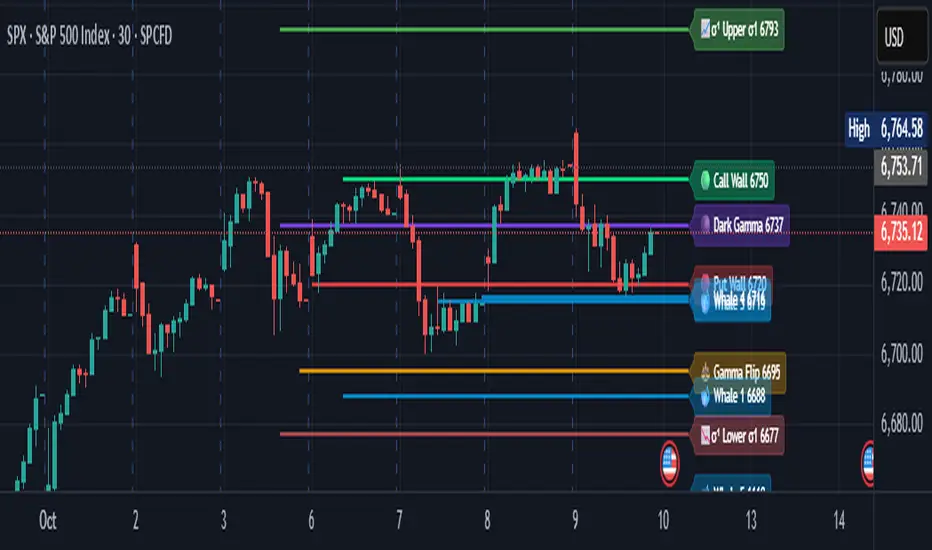

OBJETIVO
Para que serve
Permitir que um usuário transporte rapidamente níveis calculados fora do TradingView para o gráfico, sem precisar configurar cada linha individualmente.
Indicador Pine v5 enxuto para desenhar treze níveis pré-calculados de estrutura de opções.
OBJETIVO
Permitir que um usuário transporte rapidamente níveis calculados fora do TradingView para o gráfico, sem precisar configurar cada linha individualmente.
INPUT
Uma lista com 13 valores na ordem: Call Wall, Put Wall, Gamma Flip, Dark Gamma, Whale 1–5, Upper σ1/σ2 e Lower σ1/σ2.
CÁLCULOS
O script não calcula os níveis de opções. Sua lógica principal é parsing da lista, associação posicional de nomes/cores e definição de comprimentos relativos das linhas.
VISUALIZAÇÃO
REFERÊNCIA VISUAL

AUTOMAÇÃO
Baixa. Os treze números precisam ser produzidos externamente e colados no campo do indicador. Depois disso, a renderização é automática.
INSTALAÇÃO
Instalação disponível no TradingView. O tutorial ensina a instalar o Pine e a preparar a lista dos 13 níveis na ordem esperada pelo script.
LIMITAÇÕES
CÓDIGO-FONTE
COMPARAÇÃO
É a melhor opção quando o objetivo é simplicidade de transporte e plotagem. Em troca, oferece muito menos contexto do que qO ou Support & Resistance e não carrega os dados primários encontrados no EWZ Mapa OI.